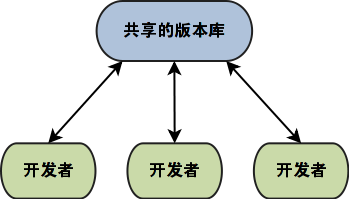

4.1. 经典Git协同模型¶
4.1.1. 集中式协同模型¶
可以像集中式版本控制系统那样使用Git，在一个大家都可以访问到的服务器上架设Git服务器，每个人从该服务器克隆代码，本地提交推送到服务器上。如图21-1所示。
图21-1：集中式协同模型
回忆一下在使用Subversion等集中式版本控制系统时，对服务器管理上的要求：
- 只允许拥有帐号的用户访问版本库。
- 甚至只允许用户访问版本库中的某些路径，其他路径不能访问。
- 特定目录只允许特定用户执行写操作。
- 服务器可以通过钩子实现特殊功能，如对提交说明（commit log）的检查，数据镜像等。
对于这些需求，Git大部分都能支持，甚至能够做到更多：
- 能够设置谁能够访问版本库，谁不能访问版本库。
- 具有更为丰富的写操作授权。可以限制哪些分支不允许写，哪些路径不允许写。
- 可以设置谁可以创建新的分支。
- 可以设置谁可以创建新的版本库。
- 可以设置谁可以强制更新。
- 服务器端同样支持钩子脚本。
但是也要承认，在“读授权”上Git做不到很精细，这是分布式版本控制系统的机制使然。按模块分解Git版本库，并结合后面介绍的多版本库协同解决方案可以克服Git读授权的局限。
- Git不支持对版本库读取的精确授权，只能是非零即壹的授权。即或者能够读取一个版本库的全部，或者什么也读不到。
- 因为Git的提交是一个整体，提交中包含了完整目录树（tree）的哈希，因此完整性不容破坏。
- Git是分布式版本控制系统，如果允许不完整的克隆，那么本地就是截然不同的版本库，在向服务器推送的时候，会被拒绝或者产生新的分支。
用Gitolite架设集中式的Git服务器
对于集中式的工作模型的核心就是架设集中式的Git服务器，而且尽量能够满足前面提到的对授权和版本库管理上的需求。在本书第5篇介绍服务器部署的时候，会介绍用Gitolite架设Git服务器，可以实现集中式协同模型对版本库授权和管理上的要求。
4.1.1.1. 使用集中协同模型¶
对于简单的代码修改，可以像传统集中式版本控制系统（Subversion）中那样工作，参照图21-2所示的工作流程图。

图21-2：集中式协同模型工作流1
但是对于复杂的修改（代码重构/增加复杂功能），这个工作模式就有些不合适了。
第一个问题是：很容易将不成熟代码带入共享的版本库，破坏共享版本库相应分支的代码稳定性。例如破坏编译、破坏每日集成。这是因为开发者克隆版本库后，直接工作在缺省的跟踪分支上，当不小心执行git push命令，就会将自己的提交推送到服务器上。
为了避免上面的问题，开发者可能会延迟推送，例如在新功能定制的整个过程（一个月）只在本地提交，而不向服务器推送，这样产生更严重的问题：数据丢失。开发者可能因为操作系统感染病毒，或者不小心的目录删除，或者硬盘故障导致工作成果的彻底丢失，这对个人和团队来说都是灾难。
解决这个问题的方法也很简单，就是在本地创建本地分支（功能分支），并且同时在服务器端（共享版本库）也创建自己独享的功能分支。本地提交推送到共享版本库的自己独享的分支上。当开发完成之后，将功能分支合并到主线上，推送到共享版本库，完成开发。当然如果该特性分支不再需要时需要作些清理工作。参见图21-3所示的工作流程图。

图21-3：集中式协同模型工作流2
4.1.1.2. Gerrit特殊的集中协同模型¶
传统集中式协同模型的缺点
传统集中式协同模型的主要问题是在管理上：谁能够向版本库推送？可以信赖某人向版本库推送么？
对于在一个相对固定的团队内部使用集中式协同模型没有问题，因为大家彼此信赖，都熟悉项目相关领域。但是对于公开的项目（开源项目）来说，采用集中式的协同模型，必然只能有部分核心人员具有“写”权限，很多有能力的参与者被拒之门外，这不利于项目的发展。因此集中式协同模型主要应用在公司范围内和商业软件开发中，而不会成为开源项目的首选。
强制代码审核的集中式协同模型
Android项目采用了独树一帜的集中式管理模型——通过Gerrit架设的审核服务器对提交进行强制审核。Android是由大约近200个Git版本库组成的庞大的项目，为了对庞大的版本库进行管理，Android项目开发了两个工具repo和Gerrit进行版本库的管理。其中Gerrit服务器为Android项目引入了特别的集中式协同模型。
Gerrit服务器通过SSH协议管理Git版本库，并实现了一个Web界面的评审工作流。任何注册用户都可以参与到项目中来，都可以推送Git提交到Gerrit管理下的Git版本库（通过Gerrit启动的特殊SSH端口）。Git推送不能直接推送到分支，而是推送到特殊的引用refs/for/<branch-name>，此提交会自动转换为形如refs/changes/<nn>/<review-id>/<patch-set>的补丁集，此补丁集在Gerrit的Web界面中显示为对应的评审任务。评审任务进入审核流程，当通过相关负责人的审核后，才被接受，被合并到正式的版本库中。
在本书的第5篇第32章“Gerrit代码审核服务器”中会详细介绍Gerrit代码审核服务器的部署和使用。

{kind=link}